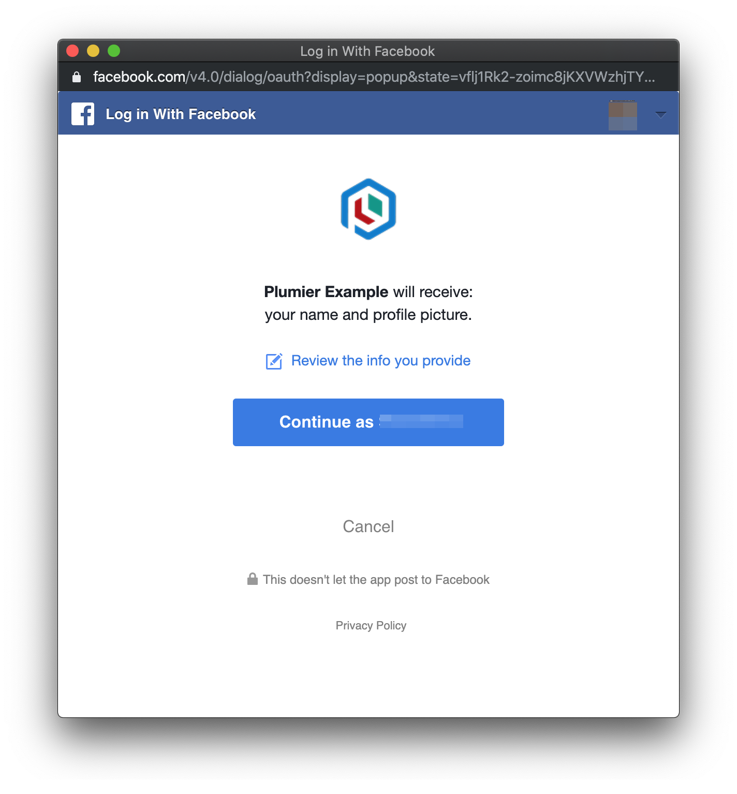

Social Login
Plumier provided action specific middleware to easily create OAuth 2 callback url. Internally it uses authorization code flow. With supported provider Google, Facebook, Github, GitLab.
OAuth Callback Middleware
Every OAuth2 with authorization code flow require us to create a callback url to parse authorization code and further we can exchange the authorization code into access token.
Plumier OAuth callback middleware done all those process for you and automatically bind the login status into parameter marked with @bind.loginStatus().
import { FacebookProvider, FacebookLoginStatus } from "@plumier/social-login"
import { sign } from "jsonwebtoken"
import { response, bind } from "plumier"
export class FacebookController {
@oAuthCallback(new FacebookProvider(<client id>, <client secret>))
callback(@bind.loginStatus() status: FacebookLoginStatus) {
const token = sign({ <token claim> }, <token secret>)
return response.callbackView({ accessToken: token })
}
}
Controller above will handle GET /facebook/callback which will be used as a OAuth callback url. @oAuthCallback is an action specific middleware that will be process the provided authorization code passed by the Facebook login screen.
For other OAuth provider, the implementation is quite straightforward
export class GitHubController {
@oAuthCallback(new GitHubProvider(<client id>, <client secret>))
callback(@bind.loginStatus() status: GitHubLoginStatus) {
const token = sign({ <token claim> }, <token secret>)
return response.callbackView({ accessToken: token })
}
}
export class GoogleController {
@oAuthCallback(new GoogleProvider(<client id>, <client secret>))
callback(@bind.loginStatus() status: GoogleLoginStatus) {
const token = sign({ <token claim> }, <token secret>)
return response.callbackView({ accessToken: token })
}
}
export class GitLabController {
@oAuthCallback(new GitLabProvider(<client id>, <client secret>))
callback(@bind.loginStatus() status: GitLabLoginStatus) {
const token = sign({ <token claim> }, <token secret>)
return response.callbackView({ accessToken: token })
}
}
Keep in mind that by default controller method translated into
GETroute, so on example above its not necessary to decorate thecallbackmethod with@route.get().
Internally @oAuthCallback will process the authorization code, exchange the code into access token and retrieve user profile from OAuth provider. @oAuthCallback automatically bind parameter decorated with @bind.loginStatus() and populate its value with data like below
interface SocialLoginStatus<T = any> {
status: "Success" | "Error",
error?: any,
data?: T
}
status: status of the login the value can beSuccessorError.error: error information of the current logindata: contains current user profile information ifstatusisSuccess.
Provider
@oAuthCallback middleware receive single parameter named provider which will provide info about token url and profile url, you can create your own provider easily by using plain TypeScript class implements SocialAuthProvider the signature is like below
export interface SocialAuthProvider {
tokenEndPoint: string
profileEndPoint: string
clientId: string
clientSecret: string
profileParams: {}
}
Interface above is a contract for a provider required by @oAuthCallback middleware.
tokenEndPointtoken endpoint of the OAuth serverprofileEndPointprofile endpoint to get current login user information.clientIdOAuth 2 client idclientSecretOAuth 2 client secretprofileParamsextra parameter used to query login user profile.
Authentication Dialog URL Middleware
Plumier provided another middleware to easily generate OAuth authentication dialog url. The implementation is simply like below
export class FacebookController {
@oAuthDialogEndPoint(new FacebookDialogProvider("/facebook/callback", process.env.FACEBOOK_CLIENT_ID))
login() { }
}
Above code will generate route GET /facebook/login the route automatically redirected into Facebook OAuth authentication like picture below.

The @oAuthDialogEndPoint received single parameter that is a dialog provider. Dialog provider will provide default OAuth authentication URL information. The parameters are:
callbackUrlthe OAuth callback parameter, only the path, doesn't require the full url.clientIdthe OAuth client id
If the default URL doesn't enough, for example you need to setup more parameters on the OAuth url, you can return the extra parameters from the controller.
Example below showing that we provide state parameter for the OAuth url.
export class FacebookController {
@oAuthDialogEndPoint(new FacebookDialogProvider("/facebook/callback", process.env.FACEBOOK_CLIENT_ID))
//GET /auth/dialogs/facebook
facebook(@bind.cookie("csrf:key") secret: string) {
return { state: new Tokens().create(secret) }
}
}
Callback View
Usually OAuth login launched in a new browser popup dialog, at the end of login process callback url need a way to pass a login token into the parent window.
Plumier provided a simple html used to communicate to the parent window. From the previous example you can see that the callback method returned response.callbackView(), this function actually returned html that will be pass the token into the parent window, the html is like below:
<!DOCTYPE html>
<html>
<title></title>
<body>
<script type="text/javascript">
var message = '<message passed from method, serialized into json>';
(function(){
window.onbeforeunload = function () {
window.opener.onCancelLogin(window)
};
window.opener.onLogin(window, JSON.parse(message))
})()
</script>
</body>
</html>
Important part of above code is you need to provide 2 global functions that will be called by the popup:
onLoginfunction will be called when the login process ended (Fail or Success)onCancelLogincalled when the popup closed.
Example
The full implementation of social login can be found here. Important parts of the example are:
- OAuth callbacks implementations for each social medias can be found AuthController
- UI logic to compose auth url and show the social login popup here
- UI logic to handle social login
onLoginevent here